Peter McAlernon
Product Designer
Projects
Experience
About Me
My passion is to solve problems, with innovative design solutions. I enjoy using design to communicate and enagage people with visual storytelling and improve everyone's experience with services and digital products. Being able to talk with a wide range of people, learn about their needs use this to implement improvement across products and services is why I chose to become a desinger.
When I'm not in front of a screen, I relish spending quality time with friends and my mischievous yet endearing Dachshund, Roxie. I'm equally drawn to the thrill of motorsport and the artistry of photography, a passion I seamlessly blend in my automotive photography showcased on Instagram.
Giving back is integral to my philosophy, and currently, I'm actively involved in the Gig Buddies project and lend a hand at the Black Moon Club night at The Black Box. Here, I'm committed to championing access and independence for individuals with learning disabilities and/or Autism.
